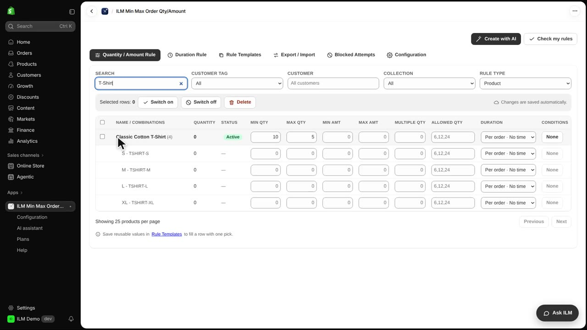
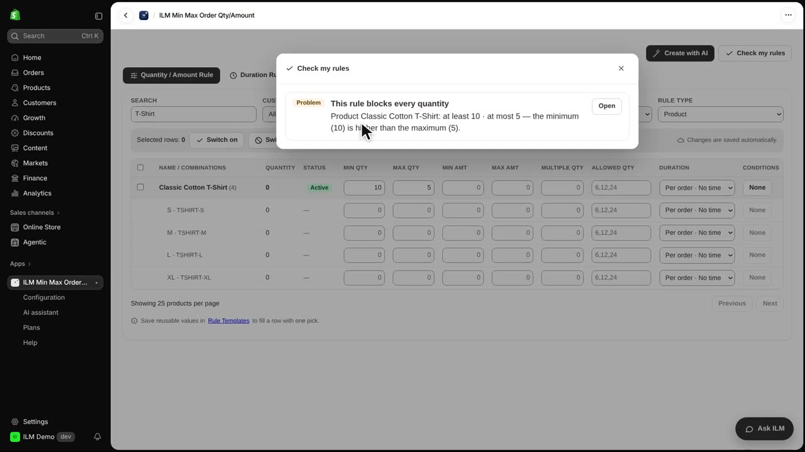
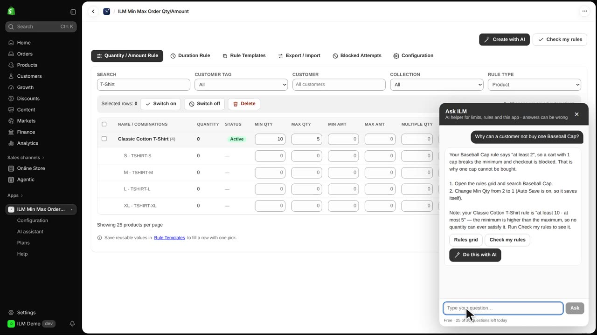
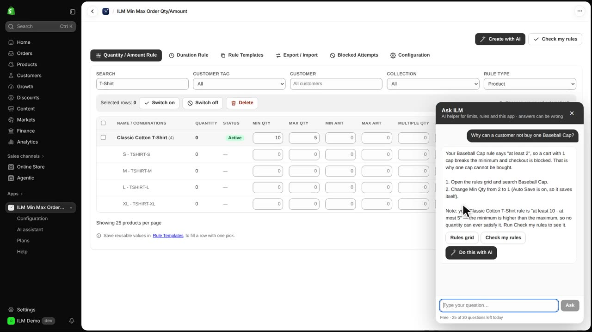

Two helpers keep your rules right. Check my rules finds mistakes, and Ask ILM answers questions about your own store. Today we look at a T-shirt that has a minimum of ten and a maximum of five, so nobody could ever buy it. We will find that mistake, then ask a question in plain words about the Baseball Cap.
Here on the rules list, the Classic Cotton T-Shirt has a minimum of ten and a maximum of five. That is a mistake, because no shopper can ever order ten and also stay at five or below. A shop might set this by accident after changing a limit, and the product quietly stops selling.

Click Check my rules at the top of the app. It lists the rules that can never be met, and it does not use any AI credits. The result points at the T-shirt rule, so you know exactly what to fix.

Close the results, then click Ask ILM at the bottom right of any page. Type your question in your own words, here asking why a customer cannot buy one Baseball Cap, and send it. The app reads this store's own rules to answer, so you do not need to know which setting to look at.

The answer appears in the chat and explains which rule is blocking the Baseball Cap, in this case its minimum of two. The reply comes from this store's rules, but AI can make mistakes, so always check what it says against the rule itself. Use it as a quick guide, not as the final word.
